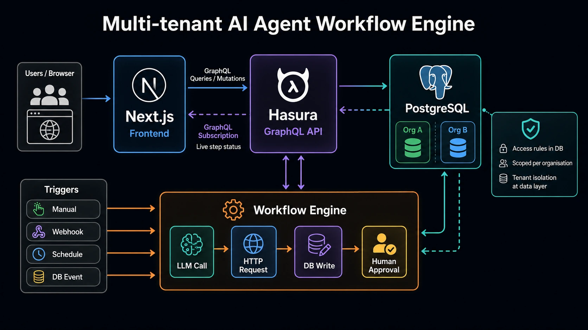
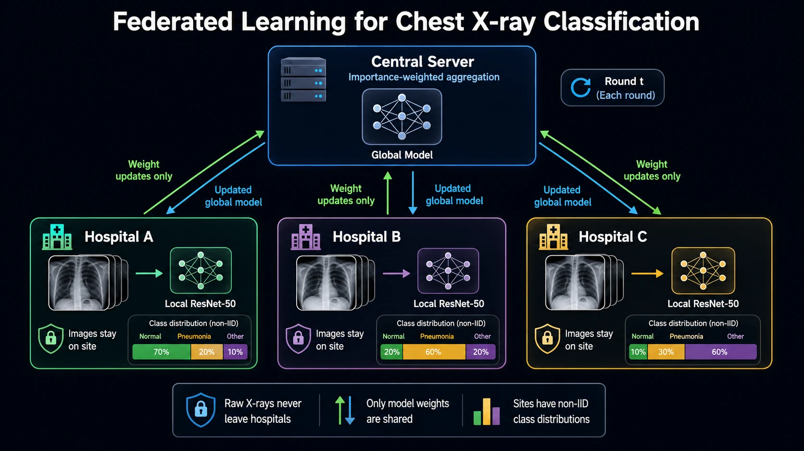
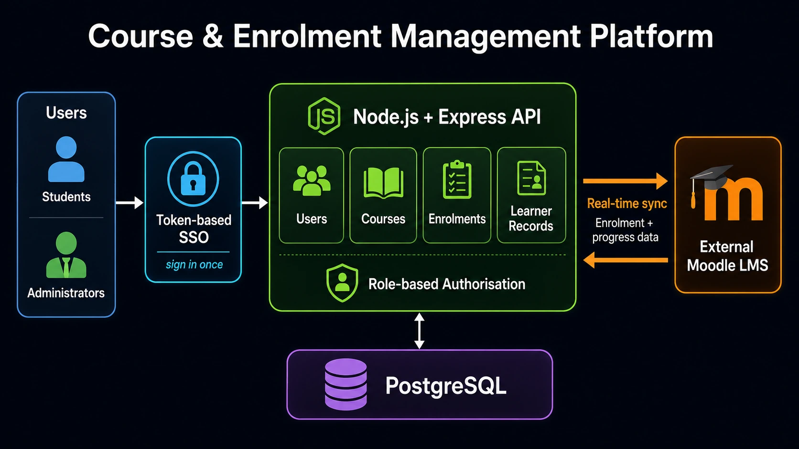
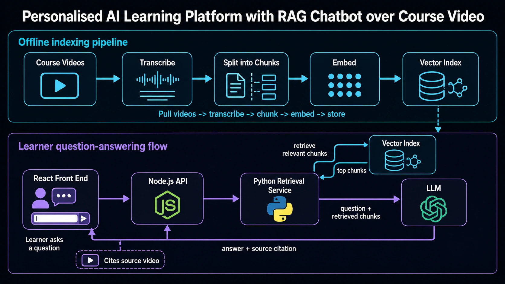

PRASADCHOPADE
Computer Engineer

Profile
I'm a software developer with a strong interest in Full-Stack Development and Machine Learning. I'm a motivated person who loves taking on challenges, and I enjoy figuring out how to make systems hold up under real conditions.
- DEGREE
- B.Tech Computer Engineering
- INSTITUTION
- Sardar Patel Institute of Technology (SPIT)
- BASED IN
- Nashik, India
- STATUS
- Open to work
Projects
HOVER TO HOLD · CLICK TO OPEN
AI Agent Workflow Builder
A multi-tenant workflow engine. Organizations build workflows out of six step types (LLM calls, HTTP requests, database writes, notifications, conditional branches and human approval gates) and start them manually, by webhook, on a schedule or from a database change. Every step reports its status live over GraphQL subscriptions. One company's data is completely unreachable by another, because the access rules sit in the database layer instead of application code. An automated attack suite tries to read, modify and approve another company's records using their exact record IDs: 37 checks, every unauthorized attempt blocked. Quota limits, deduplication and retry handling make up the rest of the 112 automated tests.
- ROLE
- Full-stack
- STACK
- Next.js · TypeScript · Hasura · PostgreSQL · GraphQL · Docker
- LINK
- Live app ↗ Repo ↗

Federated Learning for Medical Imaging
An end-to-end federated pipeline in PyTorch. A ResNet-50 trains from random initialization across 144,660 chest X-rays pulled from three public datasets: NIH ChestX-ray14, RSNA and Pediatric. The adult and pediatric splits are naturally non-IID, mapped onto one 3-class label space. Importance-weighted aggregation reached 80% average accuracy across the three hospitals, against 76.7% for isolated local training and 77.2% for standard FedAvg. Round-wise client scheduling then lifted one hospital from 77.7% to 83%, which separates the effect of scheduling from aggregation weighting.
- ROLE
- ML engineering and research
- STACK
- PyTorch · ResNet-50 · Federated Learning
- VENUE
- ISED 2026, NIT Warangal

UAV-V2X Intrusion Detection
A real-time intrusion detection system for 6G-enabled UAV and vehicular networks, built on NS-3 and PyTorch and wired into the ONNX runtime for live in-loop inference. The dataset came out of simulated UAV-V2X environments, with cleaning, feature engineering and statistical validation to get it ready for training. Resilience was measured against five cyberattack vectors, reaching 91.5% detection recall.
- ROLE
- Research Intern, IIT Guwahati
- STACK
- NS-3 · PyTorch · ONNX Runtime
- VENUE
- COMSNETS 2026
- LINK
- IEEE Xplore ↗
The Hub
An integrated course and management system for ICEP Europe. Token-based authentication gives single sign-on to more than 3,000 student accounts, and a Moodle LMS integration syncs enrollment and progress data in real time. Four REST API admin modules cover user, course, enrollment and learner record management, replacing the spreadsheet workflow the ICEP admin team had been running on. Role-based authorization controls who can reach student records and administrative operations.
- ROLE
- Software Developer Intern, Adivid Technologies
- STACK
- Node.js · Express · PostgreSQL · Moodle LMS

CNN-Transformer Waste Classification
The first systematic benchmark of CNN-Transformer hybrid architectures for multi-class waste classification. Every pairing went through the same PyTorch pipeline, with transfer learning and AdamW, so the results stay comparable across models. Best accuracy on Garbage Classification v2 was 96.84%.
- ROLE
- Research Intern, SPIT Mumbai
- STACK
- PyTorch · Transfer Learning · AdamW
- VENUE
- IEEE IntelliSecAI 2025
- LINK
- IEEE Xplore ↗
Saarthi
A personalized learning platform built around roadmap generation, adaptive content delivery and AI-assisted note taking. A RAG chatbot works through more than 100 hours of learning video a week to find relevant resources, running on a rate-limited architecture built to scale.
- ROLE
- Full-stack
- STACK
- React · TailwindCSS · Node.js · Python · AWS · Docker · YouTube API

Publications
- An NS-3/mmWave-Based Simulation Framework for Real-Time Anomaly Detection in UAV-Assisted 6G Networks. COMSNETS 2026 [DOI] ↗
- Systematic Evaluation of CNN-Transformer Hybrid Architectures for Multi-Class Waste Classification. IEEE IntelliSecAI 2025 [DOI] ↗
- Enhanced Federated Learning for Medical Image Diagnosis using Reinforcement Learning. ISED 2026, NIT Warangal [ IN PRESS ]